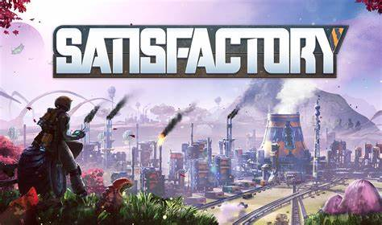

Destaque da Semana

Black Myth: Wukong é um RPG de ação inspirado na mitologia chinesa. A história é baseada em "Jornada para o Oeste", um dos Quatro Grandes Romances Clássicos da literatura do país. Você assume o papel do Predestinado e tem a responsabilidade de encarar os desafios e as maravilhas do mundo para desvendar a verdade obscura por trás de uma lenda gloriosa do passado..
Novidades

Satisfactory
Satisfactory é um jogo de construção de fábricas em primeira pessoa num mundo aberto, com traços de exploração e combate. Jogue sozinho ou com amigos, explore um planeta alienígena, crie fábricas de vários andares e entre no paraíso das esteiras de transporte!.